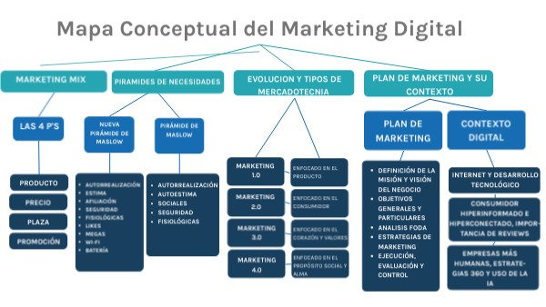

Presentación
Vamos a realizar un Plan de Marketing para producto o servicio . Para ello vamos a tener en cuenta las fases que iremos viendo que se corresponden con los contenidos del UT 6 El Plan de marketing:
- Análisis de la situación de partida(misión). Quienes somos, nuestro público , etc.
- Análisis interno y externo y resultado DAFO.
- Público objetivo.
- Objetivos marcados.
- Estrategias de marketing 4P.
- Estrategias de actuación.
- Recursos necesarios.
- Seguimiento y control.
A continuación se adjunta un mapa conceptual de los contenidos a tratar.
